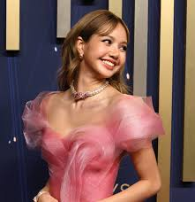
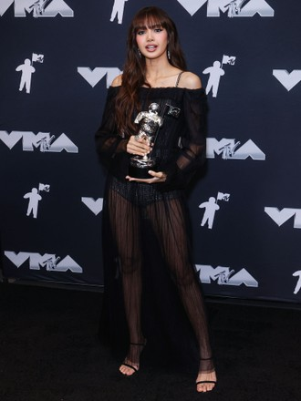
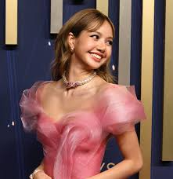
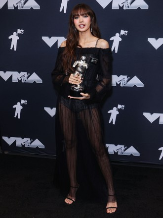

Historia

Inicio
Lalisa Manobal, conocida artísticamente como Lisa, nació el 27 de marzo de 1997 en Buriram, Tailandia. Su nombre de nacimiento fue Pranpriya Manobal, pero más tarde lo cambió legalmente a Lalisa. Es cantante, rapera, bailarina y modelo. Habla tailandés, coreano e inglés, y tiene conocimientos básicos de japonés. Lisa alcanzó fama mundial como integrante de BLACKPINK, grupo formado por YG Entertainment en 2016. Dentro del grupo ocupa las posiciones de bailarina principal, rapera principal, sub-vocalista y es la maknae (la integrante más joven). Es ampliamente reconocida por su técnica de baile, su presencia escénica y su estilo único. En 2021 debutó como solista con el álbum sencillo LALISA, que incluye las canciones LALISA y MONEY. Con este lanzamiento rompió récords de visualizaciones en YouTube y logró que “Money” ingresara en el Billboard Hot 100, además de volverse viral en plataformas como TikTok. Además de su carrera musical, participó como mentora de baile en el programa chino Youth With You, lo que incrementó significativamente su popularidad en Asia. En el mundo de la moda, es embajadora global de marcas de lujo como Celine y Bulgari, consolidándose como un ícono internacional. Entre datos destacados, fue la única aprendiz aceptada en Tailandia durante las audiciones de YG en 2010 y se mudó a Corea del Sur a los 14 años para entrenar. Es cercana a BamBam de GOT7 y es conocida por su amor por los gatos. Su fandom individual recibe el nombre de “Lillies”. Actualmente, Lisa es considerada una de las idols extranjeras más exitosas del K-pop y una de las celebridades asiáticas con mayor influencia global, tanto en la música como en la moda y las redes sociales.
Conoce más sobre Lalisa ManobalInformación
Logros importantes
- Primera solista de K-pop en ganar un premio en los MTV Video Music Awards y MTV Europe Music Awards.
- Mayor número de seguidores en Instagram entre artistas de K-pop.
- Récord de vistas en YouTube en 24 horas
- Primera solista en lograr 1 mil millones de streams en Spotify con una sola canción o álbum
- Ventas físicas récord en Corea del Sur
Top 3 momentos más iconicos de Lalisa
- Orgullo y símbolo cultural de Tailandia (2025)
- Headliner en Coachella (2023)
- Primera solista de K-pop en ganar un VMA (2022)
Ficha técnica
| Nombre completo real | Lalisa Manobal |
|---|---|
| Edad | 28 |
| Peso | 46 kg |
| Estatura | 166 cm |
| Inicio de carrera | Entrenó 5 años en YG Entertainment tras ser seleccionada como única tailandesa en la audición global de 2010. Debutó con Blackpink en 2016. |
| Curiosidades |
|
Registro de fans
Unete a nuestro club de fan y conviertete en una Lillie
Galería
 


